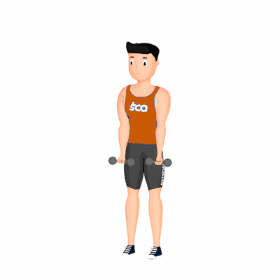

Abdução Total de Ombros

Exercício para fortalecimento e hipertrofia dos músculos da região dos ombros.
Ficha Técnica
Tipo: Musculação
Grupo Muscular: Ombro
Aparelho: Nenhum
Músculos: Nenhum
Como realizar
- Em pé, afaste os pés na largura do quadril;
- Mantenha uma postura ereta e olhe para frente;
- Faça um leve contração abdominal e mantenha braços posicionados ao lado do corpo com a palma das mãos voltadas para a frente;
- Deixe os cotovelos relaxados;
- Eleve os braços lateralmente, sem flexioná-los, até as mãos ficarem estendidas acima da cabeça;
- Retorne a posição inicial de forma controlada e repita os movimentos.
 RC STORE
RC STORE